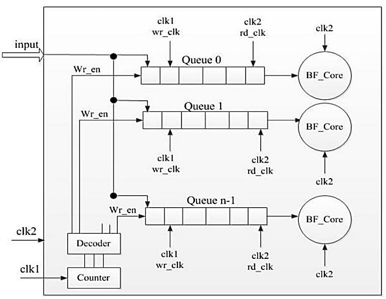

Email Campaign Management with Bounce Handling
Business Case
Email Campaign Management systems sends emails to a list of recipients, tracks delivery status, identifies bounced emails, and optimizes the sending process to avoid resending to bounced addresses. Incorporating data structures like queues and bloom filters helps efficiently manage sending order and quickly filter out previously bounced emails, improving performance and accuracy.
Algorithm, Design Techniques, Performance Analysis:
Challenges: Efficient bounce detection, Handling Large Recipient Lists, Avoiding duplicate Sends.
Market Benefits: Improved deliverability, cost efficiency.
Algorithm, Design Techniques, Performance Analysis:
- Data Structure used:Quesue: Manages the sending order of recipients in FIFO manner, enabling batch processing and asynchronous sending.
Hash Map (Dictionary): Maintains authoritative recipient info — email status (pending, sent, bounced), retry counts, etc.
Bloom Filter: Provides fast probabilistic membership checks to filter out previously bounced emails before sending.
Code
import queue
import hashlib
import math
import random
# Simple Bloom Filter Implementation
class BloomFilter:
def __init__(self, size=1000, hash_count=5):
self.size = size
self.hash_count = hash_count
self.bit_array = 0
def _hashes(self, item):
result = []
for i in range(self.hash_count):
hash_digest = hashlib.md5((str(i) + item).encode()).hexdigest()
result.append(int(hash_digest, 16) % self.size)
return result
def add(self, item):
for pos in self._hashes(item):
self.bit_array |= 1 << pos
def __contains__(self, item):
return all((self.bit_array & (1 << pos)) != 0 for pos in self._hashes(item))
# Email Campaign class using Queue and Bloom Filter
class EmailCampaign:
def __init__(self):
self.recipient_queue = queue.Queue()
self.bloom_filter = BloomFilter(size=10000, hash_count=7)
self.recipient_status = {} # email -> status ('pending', 'sent', 'bounced')
def add_recipient(self, email):
if email not in self.recipient_status:
self.recipient_status[email] = 'pending'
self.recipient_queue.put(email)
def send_email(self, email):
# Simulate sending email with 20% bounce chance
print(f"Sending email to {email}...")
if random.random() < 0.2:
print(f"Bounce detected for {email}!")
self.recipient_status[email] = 'bounced'
self.bloom_filter.add(email)
return False
else:
print(f"Email sent to {email}.")
self.recipient_status[email] = 'sent'
return True
def run_campaign(self):
while not self.recipient_queue.empty():
email = self.recipient_queue.get()
# Check bloom filter for possible bounce
if email in self.bloom_filter:
print(f"Skipping {email} - possibly bounced before (Bloom Filter).")
self.recipient_status[email] = 'bounced'
continue
# Send email
self.send_email(email)
def print_report(self):
print("\n--- Campaign Report ---")
for email, status in self.recipient_status.items():
print(f"{email}: {status}")
# Example Usage
if __name__ == "__main__":
campaign = EmailCampaign()
emails = [
"user1@example.com",
"user2@example.com",
"bounceuser@example.com",
"user3@example.com",
"user4@example.com"
]
for e in emails:
campaign.add_recipient(e)
# Run the campaign (send emails)
campaign.run_campaign()
# Run again to show Bloom Filter skipping bounced emails
print("\nRunning campaign again to test Bloom Filter...")
# Add all emails again
for e in emails:
campaign.add_recipient(e)
campaign.run_campaign()
# Final report
campaign.print_report()
⏱️ Time And Space Complexity
| Operation | Data Structure | Average Time Complexity | Space Complexity |
|---|---|---|---|
| Insert recipient | Hash Map (Dictionary) | O(1) | O(n), where n = recipients |
| Enqueue recipient | Queue | O(1) | O(n) |
| Dequeue recipient | Queue | O(1) | O(n) |
| Check membership | Bloom Filter | O(k), k = number of hash functions (small constant) | O(m), m = size of bit array |
| Add item to Bloom Filter | Bloom Filter | O(k) | O(m) |
| Update recipient status | Hash Map | O(1) | O(n) |
Inference
Inference: Queues manage campaign email scheduling (FIFO order). Bloom Filters efficiently check if an email has bounced without storing all emails, saving space. Together, they ensure optimal campaign delivery and bounce handling.
üìö References
- https://en.wikipedia.org/wiki/Bloom_filter